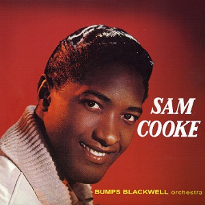
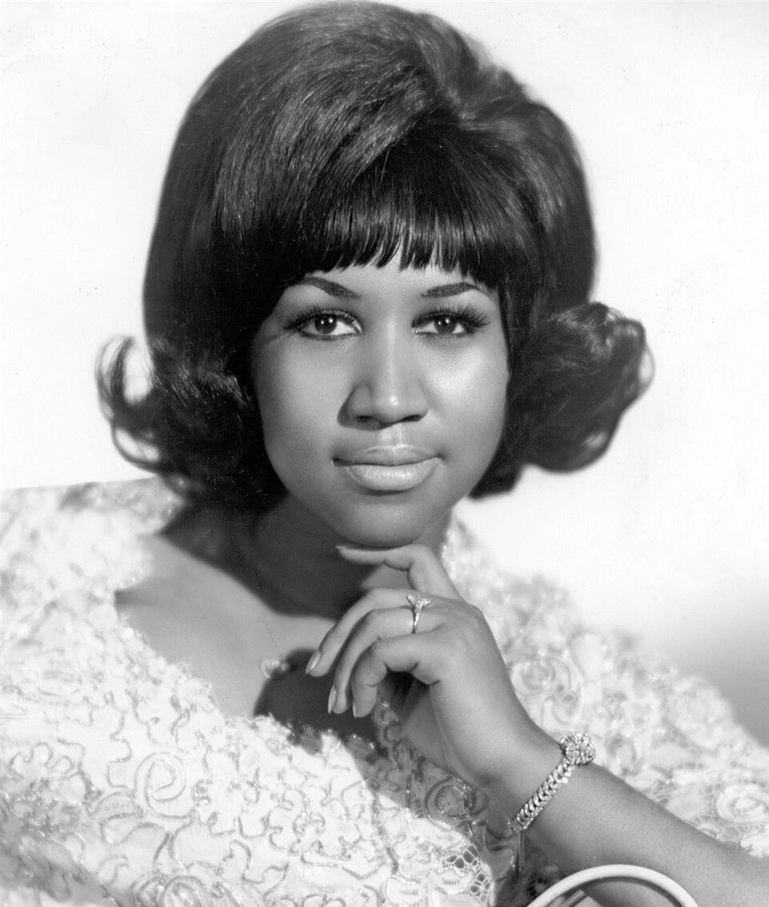
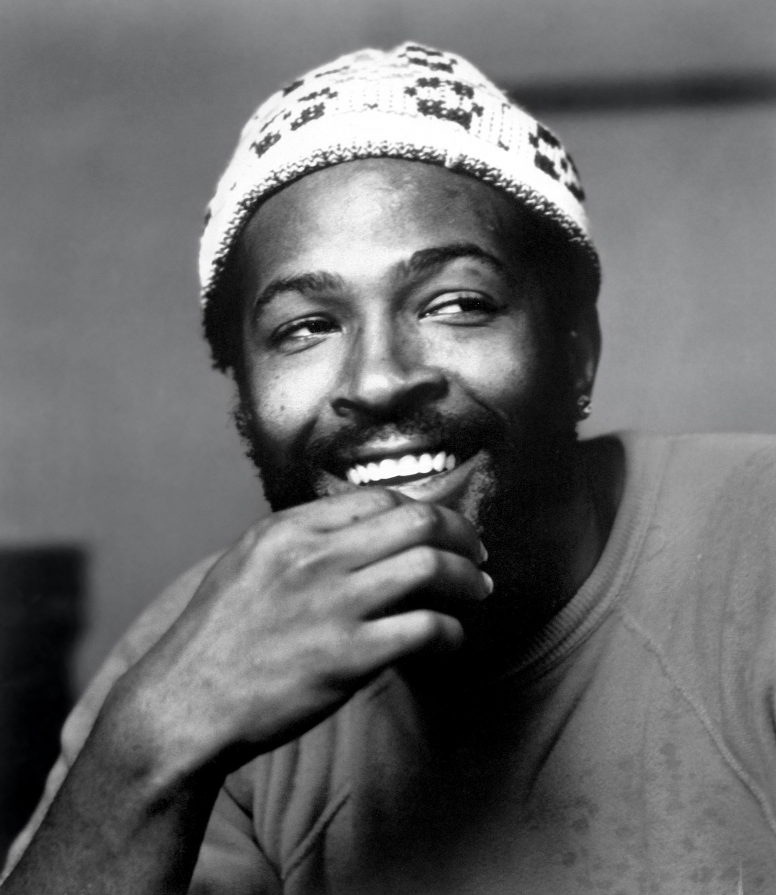
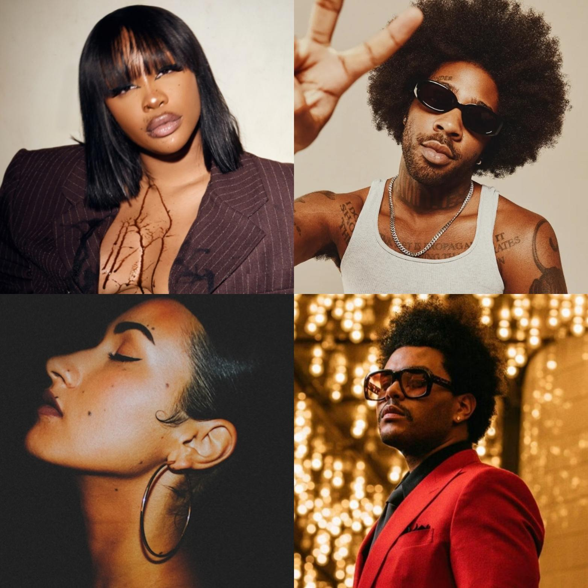
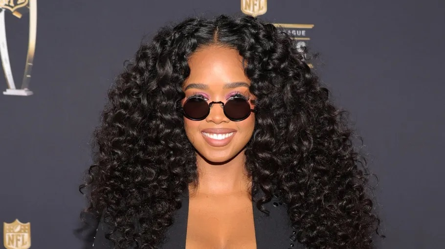
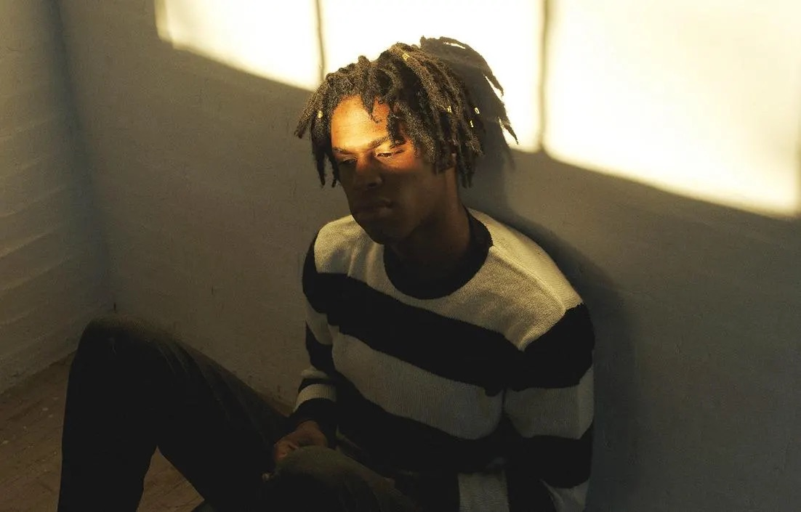
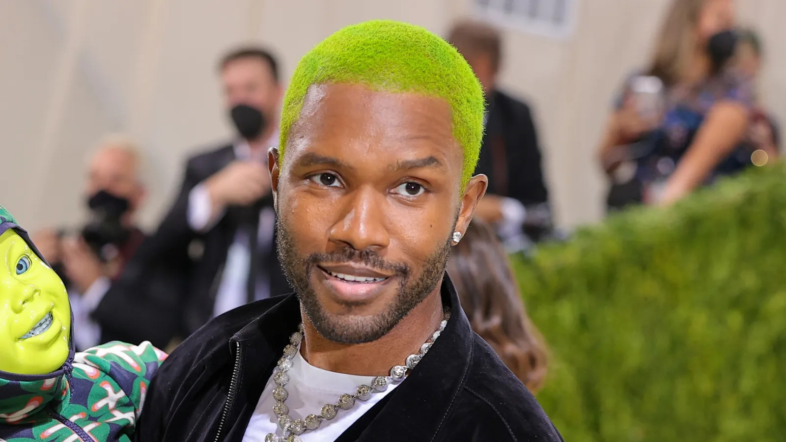
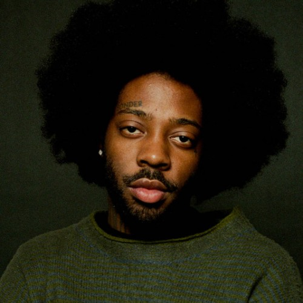
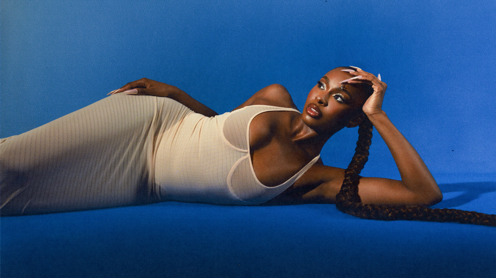
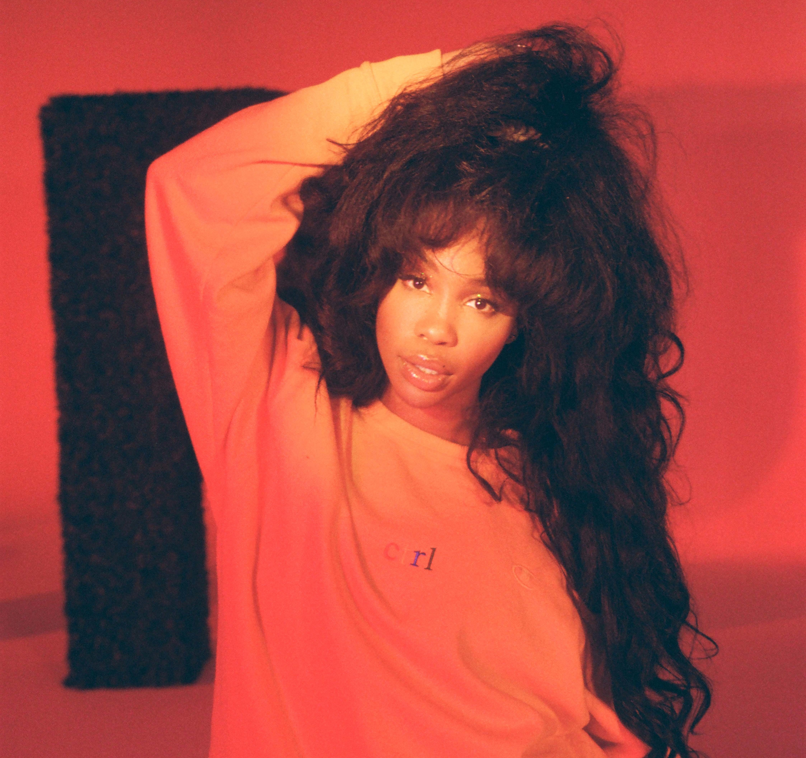

Music, no matter where it comes from, has a unique origin that is deeper than instruments or vocals; it can touch the soul and change lives. No genre has done that quite like Rhythm and Blues.
R&B is a genre that cannot be pinpointed to one singular place or influence. Its beauty lies in how it blends elements of jazz, gospel, and blues. Rhythm and Blues (R&B) originated in African-American communities in the United States during the 1940s. Originally known as “race music,” this term became offensive, especially in post-Civil War America.
Jerry Wexler coined the term "R&B" in 1948, but he's not considered the founder due to the genre’s sheer diversity. In 2016, the Smithsonian Institution defined R&B as:
“A distinctly African American music drawing from the deep tributaries of African American expressive culture, it is an amalgam of jump blues, big band swing, gospel, boogie, and blues that was initially developed during a thirty-year period that bridges the era of legally sanctioned racial segregation, international conflicts, and the struggle for civil rights.”
R&B has significantly influenced genres like rock and roll, soul, funk, and hip-hop, and continues to shape modern music. Let’s explore where this genre has been and the people who helped shape it.
Sam Cooke is one of the greatest artisits of all time and a vital figure in R&B history. He was a revolutionary who invoked gospel’s emotional and spiritual depth to mainstream audiences. He became known as the “King of Soul,” however, before that Sam was a gospel star with the Soul Stirrers, delivering powerful, God driven performances that laid the groundwork for his transition into the world of Rhythm.

What made Sam Cooke revolutionary wasn’t just his voice, it was how he carried the spirit of the church into the heart of pop and R&B. Songs like “A Change Is Gonna Come” weren’t just music; they were convicntions that showcased spirituality and his social justice. He proved that you could sing about love, struggle, and faith with the same soul-stirring conviction gospel gave him.
Learn more about Sam Cooke's life and listen to more of his music! Spotify or his Discography.
The King of Soul needs a Queen and that is the prolific, Aretha Franklin, she is known as the “Queen of Soul,” and implemented the gospel roots into every note she sang. Born into a family of faith and raised singing in her father’s church, her voice carried both the power of worship and the emotion of everyday life.

You've probably heard the iconic songs like “Respect” and “(You Make Me Feel Like) A Natural Woman” . These songs were not just hits ;they were anthems of empowerment, identity, and soul. She combined gospel emotion with R&B rhythm, turning her music into a voice for civil rights, fighting against the injustices of her time and inspiring generations to come. Aretha’s music transcended genres, becoming a universal language of love, pain, fighting for the respect of black woman, equality and self identity! She was a symbol of both mental and spiritual strength.
Dive deeper into Aretha’s music and legacy! Spotify or read more about her inspiring story discography.
Marvin Gaye was more than just a smooth voice. He was a lyracist who convyed passion and truth with his music. This amazing man grew up rooted in gospel from a young age, Gaye’s music blended soul, R&B, and social awareness in ways that moved people deeply. He is one of the gretatesrt artists and interstingly enough, is one of my favorite artists of all time.

Songs such as“What’s Going On” and “Mercy Mercy Me”, Marvin brought spirituality and activism together. His work spoke out against war, injustice, and inequality, while still delivering the warm, passionate tone of classic soul. One things that was so special about Marvin was how muchhe cared about the youth and advocated for them. He was a voice for the voiceless, using his platform to address issues that mattered and inspired the younger generation to fight what they believed in.
Listen to the prolific Marvin Gaye’s music and discover the depth of his artistry! Spotify or explore his Discography.
R&B is one of the most consitent genres of them all becuase of the fact it does not have an origin. Becuase of this, it can evolve and chnage over time. R&B today is a blend of the various orgins we see from its incetpion. With the advacement of technology, the genre has expanded to include a variety of styles and influences, from Hip-hop to electronic music, to beats that are more pop than the original soul. It has become a healthy blend of so many different genres and styles and it is beautiful.

Today’s R&B artists are redefining the genre, infusing it with personal stories, modern beats, and a fresh perspective on love and life. Here are some of the most influential contemporary R&B artists who are shaping the sound of today(yes this list is subjective but this is my list so it is the best):

The beautiful and mysterious H.E.R. Gabriella is one of the most raw in the game in terms of her talent and overall ability to convey emotion through her music. She is a multi-instrumentalist and singer-songwriter who has captivated audiences with her soulful voice and heartfelt lyrics. She is a artist who stays true to herself and conveys this through her touching lyrics and beautiful melodies. She is one of the most talented in the game and has an old school feel to her.

With a voice that touches the soul, Daniel is one of the most popular artists in the game. As we saw with many artists, he is a blend of the raw emotion of gospel and the smoothness of R&B. This man has redefined the rhthym and blues and found a rhythm unique to him and he has proved that he is one of the top guys. His sound is times, lyrics make tears come to the eye and ultimately he has changed how we view R&B.

With a voice as smooth as silk and lyrics that feel like diary entries, Frank Ocean is in a lane of his own. He’s a blend of R&B, soul, and pure emotion an artist who can make you cry over a song you’ve never heard before. From Channel Orange to Blonde, Frank gave us masterpieces... and then vanished like the avatar. We’re all still patiently waiting (and refreshing every music app) for his next album, but until then, his impact on R&B remains unmatched and deeply felt.

The empathetic narcissist, Brent Faiyaz, is the soundtrack to your situationship. He is a man who's sound is the intersection of vulnerability and vanity, Brent makes toxic sound therapeutic. His moody production, unapologetic lyrics, and cool demeanor have carved out a lane that’s equal parts hip-hop and self-reflection. Whether he's crooning about love, loneliness, or late-night regrets, Brent reminds us that R&B can be as complex and contradictory as the people who listen to it and we still enjoy it every time. His toxic charm makes you questions your own life choices, yet you still come back and press play to hear it one more time.

From Disney to stardom, Coco Jones has evolved from her childhood roots and grown into an upcoming star and dare may I say pioneer in the realm of R&B. Her vocals are so amazing that they feel like they can shatter glass with minimal effort. She is bringing back old school R&B and putting her own sound to it. She is a reminder that singing and beautiful vocals are timeless, she is slowly but surely taking over the music world.

SZA, the woman who conveys feeling like few others can shows that it’s okay to be deeply personal, vulnerable, and unsure. She’s become a voice for young adults in their 20s, reminding us that insecurity doesn’t make us weak and that there’s beauty in our mistakes. Through Grammy-winning songs filled with raw emotion, honesty, and reflection, she continues to level up with each project. In a time when self-worth can feel fleeting, SZA is reshaping R&B by proving it’s okay not to have it all figured out. She’s changing the narrative of what’s possible in music and in ourselves .
From its gospel-infused beginnings to its bold, genre-blending present, R&B has always been more than music; it’s been a reflection of the times, our emotions, and the power of expression. These artists, past and present, have not only entertained us but helped us understand ourselves. R&B continues to evolve, reminding us that the soul will always have a sound.
But the story of sound doesn’t stop here. Across the world, a sound that continues to preserve the legacy of African culture and identity is rising and becoming more popular globally. Let's journey into the heartbeat of Africa: Afrobeats.